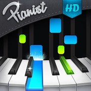
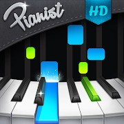

Programa usado para animar y pasar a video: Blender.
Programa usado para editar video y agregar melodía: Wondershare Filmora (Solo se usó en "Logo FLORVEL").
Aplicación usada para crear la melodía en Logo FLORVEL: Pianist HD: Piano + (Solo se usó en "Logo FLORVEL").